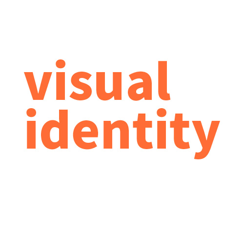

what I am
井田桜輔
私にとってデザインとは
世界中の問題を決するための手段であり
デザインが関与することで
大抵の問題は以前よりもより良いものになる。
それが「デザイン」だと考えています。
gallery

skill
可能なデザイン
・UI/UX
・VI計画
・インフォグラフィックス
・グラフィック
・モデリング
使用可能なソフト
・Adobe Illustrator
・Adobe PhotoShop
・Brender
・Microsoft office
・Adobe AfterEffect
・Adobe PremierPro
・Figma
contact
place
〒144-8535
東京都大田区西蒲田
５丁目２３−２２
Tell 070-4107-4644
Mail d0a2201098@teu.edu.ac.jp